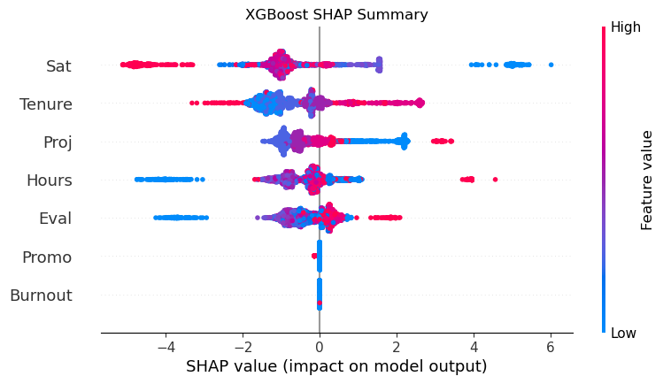
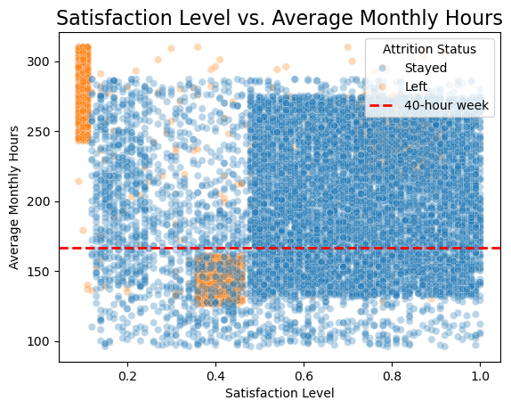
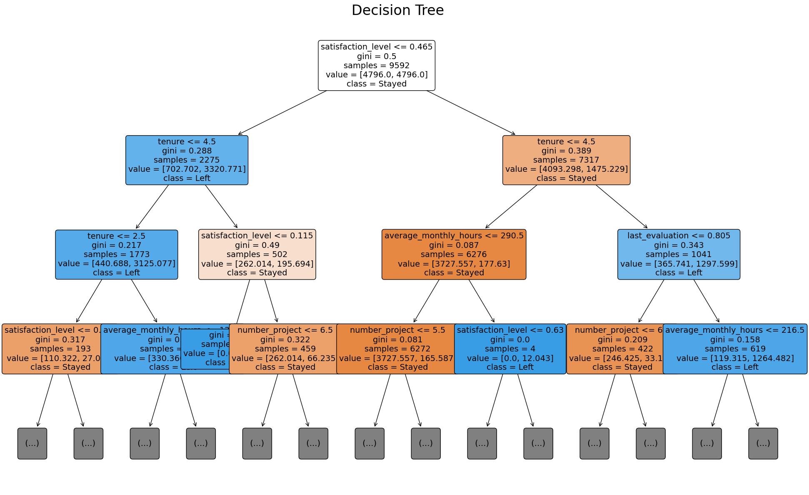
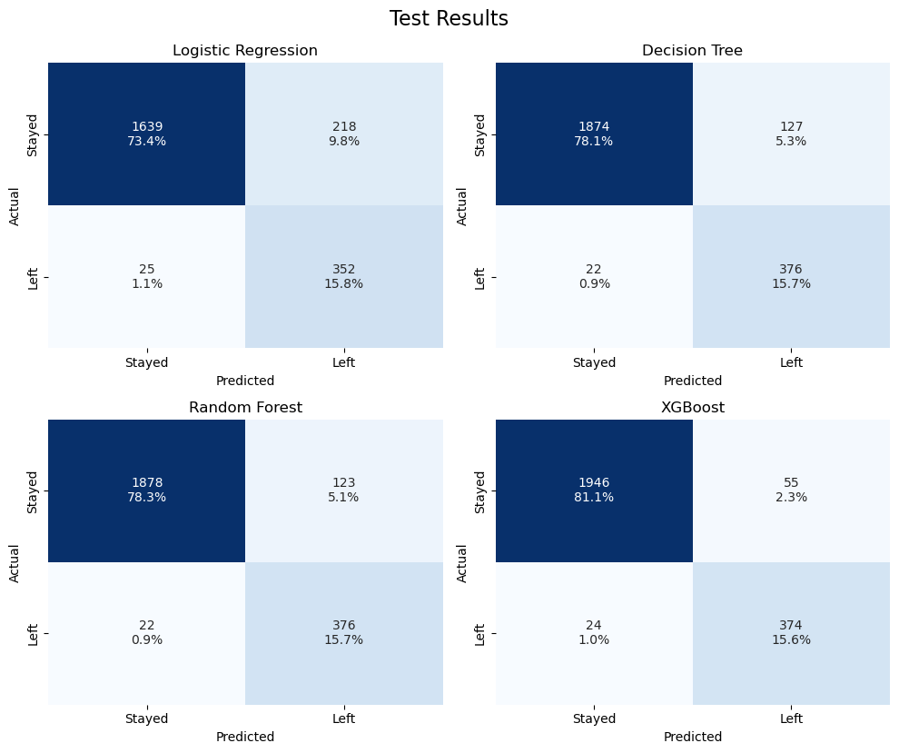
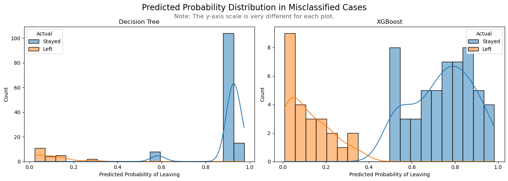
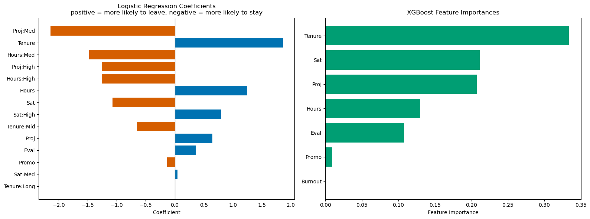

A machine learning project focused on predicting employee attrition for Salifort Motors, leveraging Python and scikit-learn to uncover the drivers of workforce turnover, identify at-risk employees, and provide actionable insights for HR decision-making. Results are presented in an interactive, web-based report designed for both technical and non-technical audiences.
Project Links
Think of this project as a user’s guide to the cranky crystal ball of machine learning. It predicts which employees might leave a company. I used it as a hands-on lab to wrestle with fundamentals I’d previously skimmed: tuning models, chasing false positives, exploring pipelines, and making peace with misclassifications. I made every mistake I could, and learned from all of them. The report is mostly tech-heavy, but includes a guided, layperson-friendly section right after the Executive Summary—part intro to machine learning, part personal field journal—for those curious how the magic (i.e., math) happens.
Project Overview
This machine learning project explores employee churn at Salifort Motors, using structured HR data to identify patterns in retention and attrition. Through Python-based exploratory data analysis (EDA) and predictive modeling, I developed a data pipeline that highlights at-risk employees and supports proactive retention strategies.
The project began with a deep dive into the data using Pandas, Matplotlib, and Seaborn to explore employee satisfaction, tenure, workload, and performance. Key EDA findings, such as the U-shaped relationship between tenure and churn, shaped our feature engineering and modeling priorities.
Using a mix of interpretable models (Logistic Regression, Decision Trees) and high-performing black-box models (Random Forest, XGBoost), the final pipeline emphasized recall, ensuring HR teams identify as many potentially departing employees as possible. XGBoost emerged as the most accurate model, particularly in predicting the “gray zone” employees—those with middling satisfaction and tenure.
To demystify the model’s logic, I incorporated SHAP values for model explainability, offering HR a clear view into which features most influenced predictions. Burnout signals like high hours, high evaluation scores, and heavy workloads surfaced as key churn predictors.
This project demonstrates my ability to combine domain knowledge, EDA, feature engineering, machine learning, and interpretability tools to generate business-ready insights. The outcome is a powerful model backed by actionable analysis, designed to help Salifort keep their people and stay ahead of turnover.
Gallery
 SHAP summary plot: Visualizing how each feature influences XGBoost’s attrition predictions for individual employees.
 Satisfaction vs. Average Monthly Hours: Two main clusters emerge—overworked, dissatisfied leavers and underutilized, disengaged employees.
 Decision Tree: A step-by-step breakdown of how key features like satisfaction, tenure, and workload drive attrition predictions.
 Confusion Matrices: Comparing model performance in correctly identifying employees who stayed or left.
 Predicted Probabilities: Distribution of model confidence for cases it misclassified, highlighting areas of uncertainty.
 Feature Importances: Ranking the most influential factors driving employee attrition in the final model.
References
Original dataset available on Kaggle. The data has been repurposed and adapted for this project as part of the Google Advanced Data Analytics Capstone.